Telechore
A file viewer and an SSH terminal for your phone or desktop: read PDFs, Markdown and code on your device or on your own servers.
Browse any folder as a tree, on this device or on a server over SSH, and read the file you pick, rendered: code with highlighting, Markdown with diagrams and math, pictures and PDFs. When you need to work on the server, you can open a terminal there over the same connection, with the keys a phone keyboard lacks, or a full keyboard with the phone on its side. A PDF laid out in two or three columns can be read one column at a time. There is nothing to install on the server.
Features: Read files Terminal Servers and keys PDFs
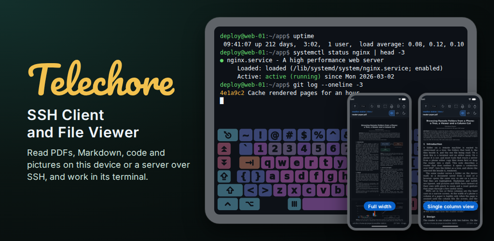
Get Telechore
Download for Linux goes to the releases on GitHub, which carry
Telechore for Linux — a .deb, an .rpm, and the
plain binary — beside treesight. A copy from a store
is the free edition: two servers, and two terminals kept running, on Google
Play, four of each on the Microsoft Store, and single column view on 28 PDFs;
on both, Pro lifts them for one payment with no subscription. The latest release is 0.6.0, from 10 November 2026;
What's new in each version.
Read files
Browse a folder as a tree and read the selected file beside it, on this device or on a server over SSH.
Browse a server's files
Its folders as a tree, the file you pick beside it.
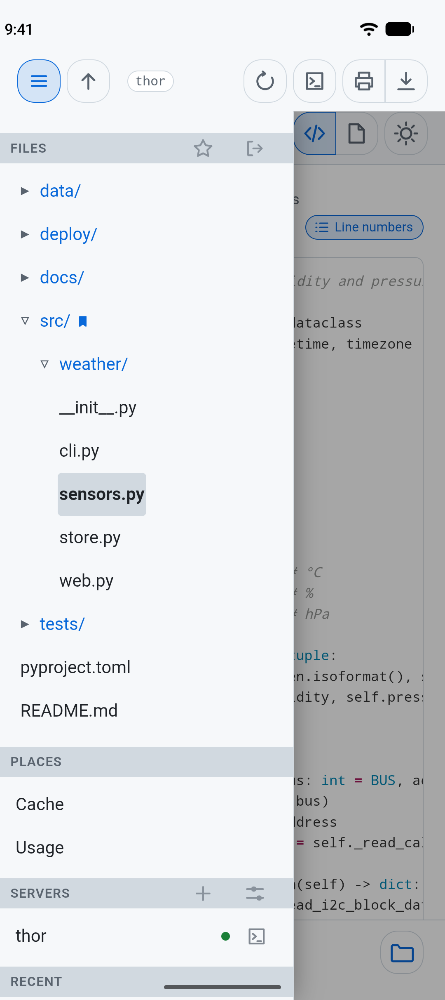
Read a server's Markdown, formatted
Diagrams, math and tables drawn; code highlighted, PDFs and pictures too.
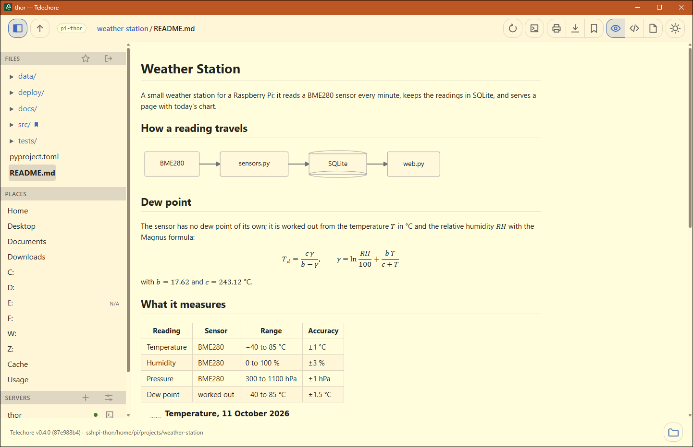
Keep a server's folder offline
Keep a copy on your device and read it with no connection.
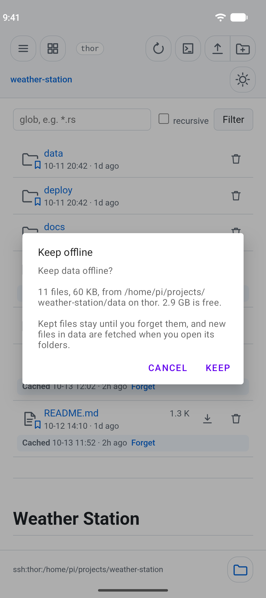
Terminal
Open a terminal on that server, in the folder you are browsing, and keep it running while you look at the files.
A full keyboard for the terminal
Turn the phone on its side. Laptop keys, or Coder keys with every symbol on a key of its own.
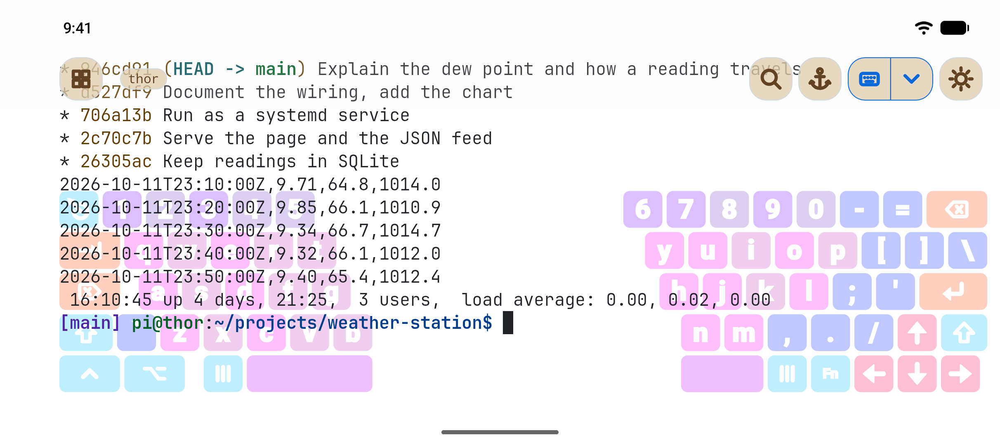
Esc, Tab, Ctrl, Alt and the arrows
The keys a phone keyboard is missing, above it or floating.
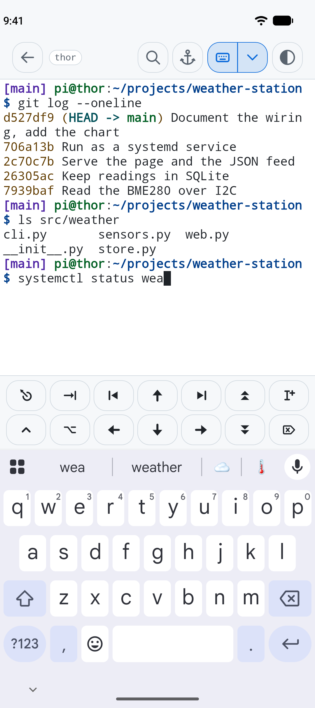
Fix the terminal's size, then zoom or pan
Full-screen programs keep their layout while the keyboard comes and goes.
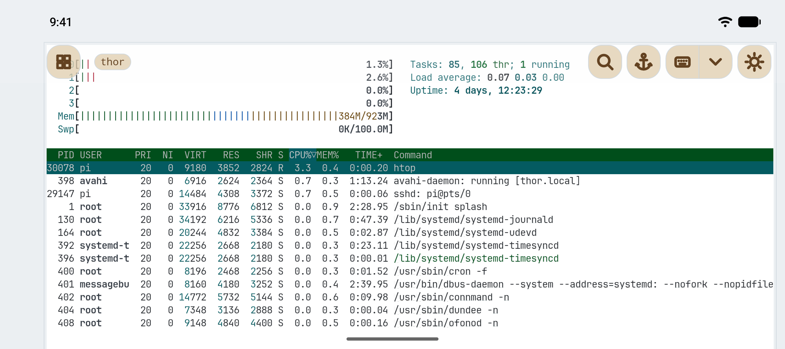
See a big terminal whole
The part you work in at full size, the rest squeezed toward the edges.
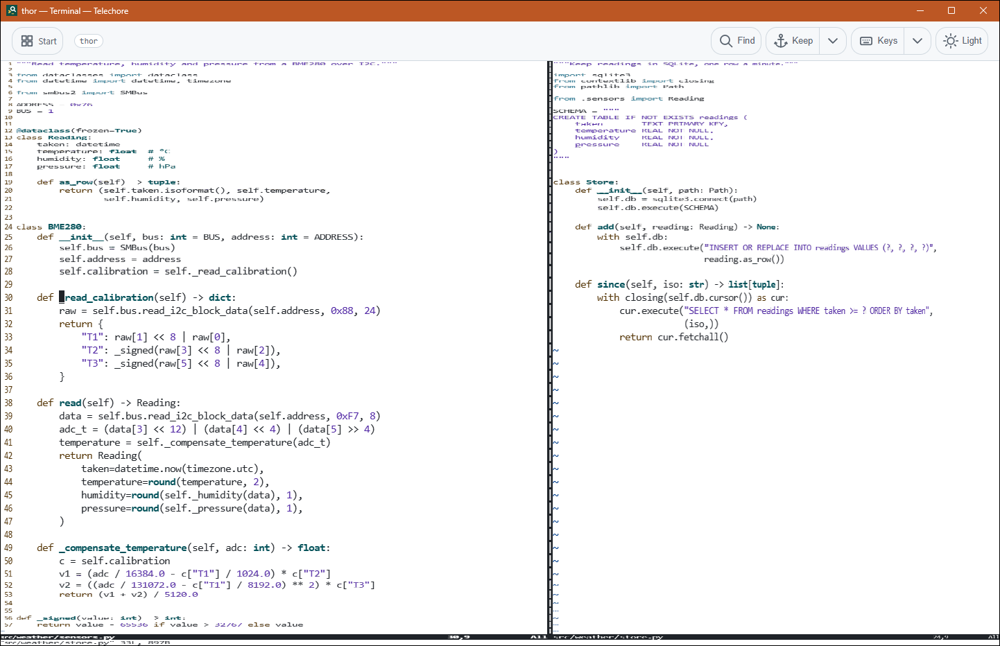
Search everything the terminal printed
Every match in the terminal is highlighted, all the way back.
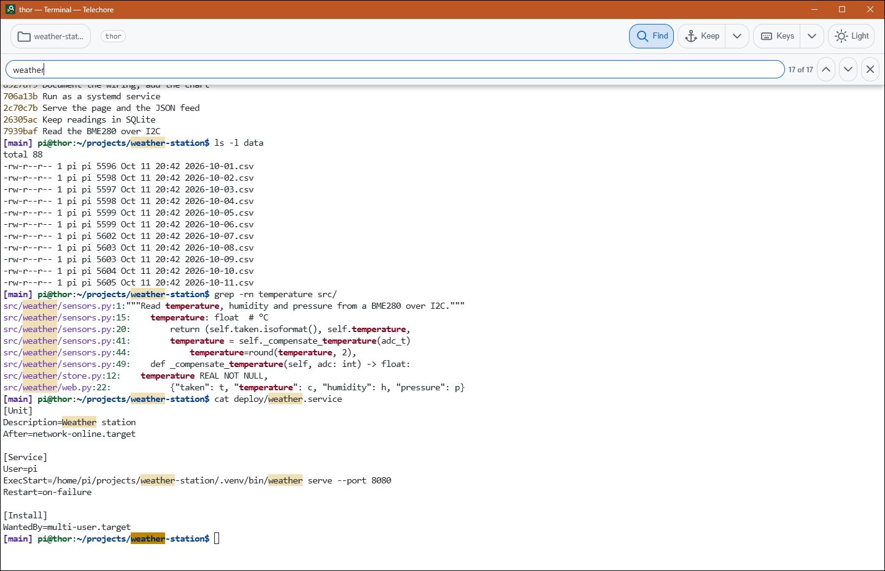
Servers and keys
Make an SSH key here and install it on a server in one step, or use the keys and ssh config you already have.
Server settings in one window
Pick an SSH server from the list; its address, login, terminal and files open beside it.
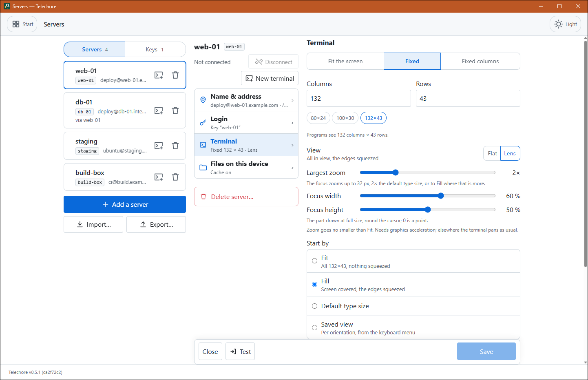
Log in by key, agent or password
Make a key here, or use ssh-agent, Pageant and your ~/.ssh/config.
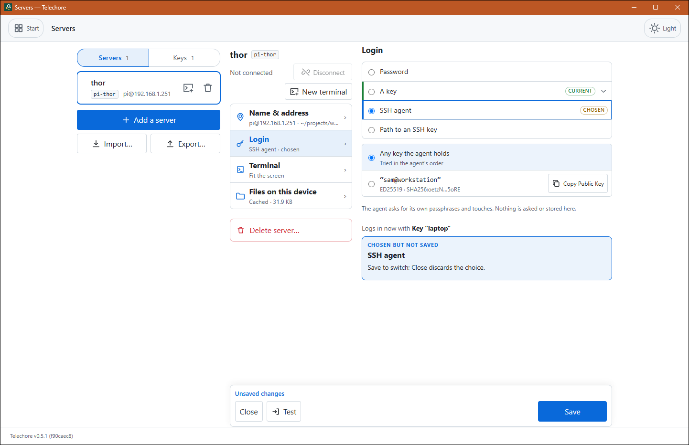
Copy server settings
By QR code, to another phone or computer, with no account.
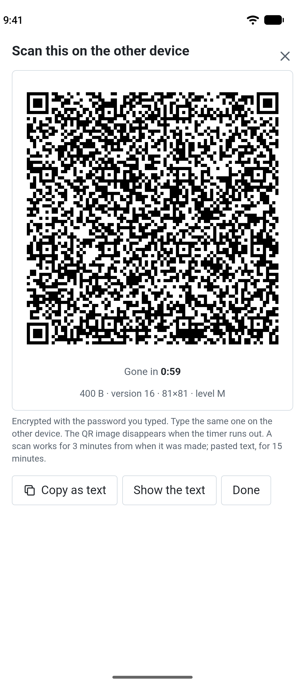
PDFs
A PDF laid out in two or three columns can be shown one column at a time, and in dark mode its figures and scans can darken too.
PDFs in columns, one at a time
Whole pages side by side, or each column at the full width of the screen.
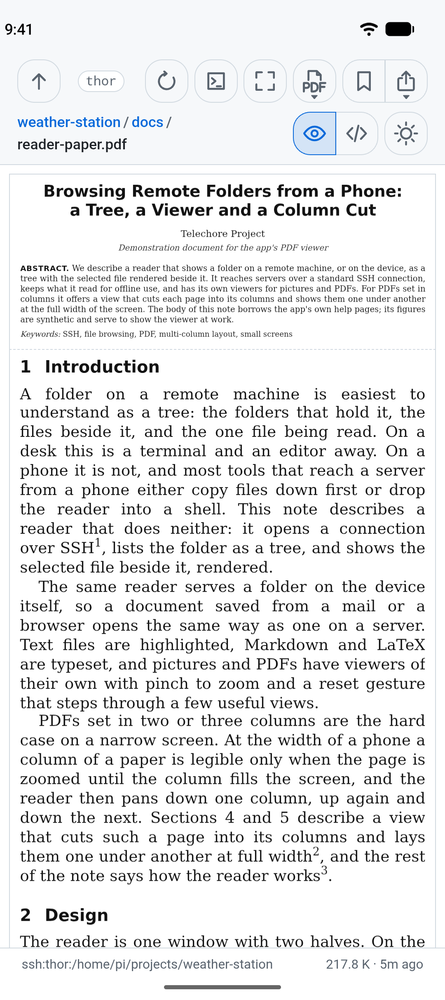
Whole pages, side by side
A swipe turns one page. On its side, the phone shows several at once.
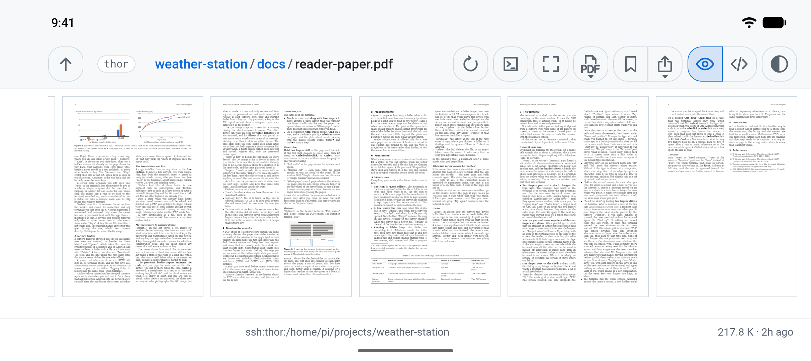
Figures across the columns
A chart that spans the page stays whole, at full width. In dark mode it darkens too.
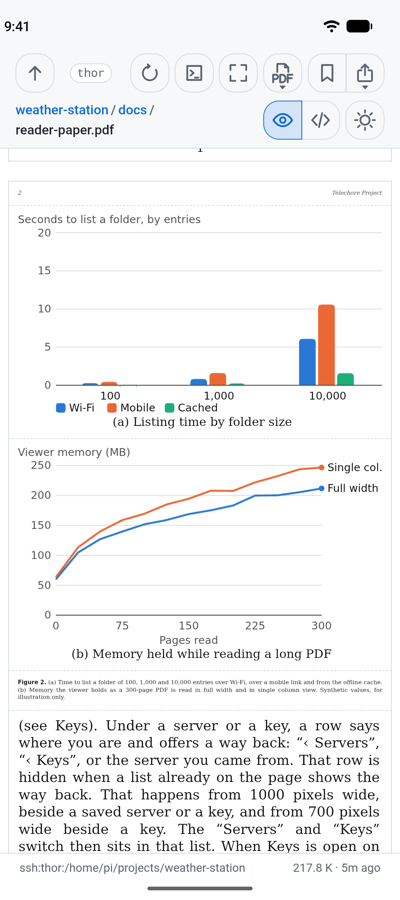
Nothing to install on the server
A standard SSH server is enough, reached directly or through a jump host.
No account, no tracking
The only traffic is the SSH connection you open, and the store you installed it from.
Videos
Filmed on Android: what Telechore can do, how to start, and PDFs in columns, each beside a Short of under a minute.
Using Telechore
The same pages the app carries under Usage, for Telechore 0.6.0.
- Servers — saving a server, choosing how it logs in, and its keys and host keys.
- The terminal — a shell on the machine you are browsing, and keeping it running when you leave it.
- Games — Termoasis's console games, kept running the way a terminal is, and played in a browser.
- Files offline — what this device keeps of a server, the “Keep offline” control, and the “Cache” place.
- Granting folders — how opening a folder works on Android, where the app cannot browse storage on its own.
- Opening folders — the start page, Places, Starred and Recent.
- Tree and sidebar — the two halves of the window.
- Reading files — what gets rendered.
- Reading PDFs and pictures — the viewers, their zoom, their views, and full screen.
- Opening files from other apps — “View in Telechore” and “Save to Telechore” on Android, “Open with” on a computer, and sending a file to another app.
- Preferences — theme, line numbers, the sidebar, zoom, printing.
- Keyboard — every shortcut there is.
- Licences — the open-source software Telechore is built with, and its licences.
Games
Telechore carries Termoasis's console games, such as 2048, Sudoku, Mines, Snake and Life, under Games in its pane, run in the app and kept, like a terminal, if you want one to go on while you are elsewhere. They play here too, in the browser, by the same engine.
Just the file browser
Telechore is built on treesight, an open-source tree browser for the folders on your own machine, without servers or the terminal. Its releases carry treesight on its own, and Telechore's Linux build.